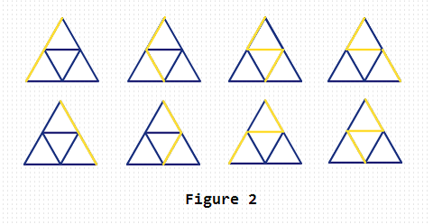

HDU4475. Downward paths
内存限制：2000/1000 MS (Java/Others) 时间限制：32768/32768 K (Java/Others)
题目描述
================
Hi! I am an ACMer from CSU. This contest made by me is to celebrate my girlfriend’s birthday although the problems in this contest do not relate to her in fact. :) Any way, happy birthday to you, honey!
Thanks to LCY, I have this chance to share my ideas and works with you. Good luck and have fun!
================
We have a graph with size = N like that in Figure 1. Then we are going to find a downward path from the top node to one bottom node.
First, we select the top node as the beginning. Then at any node, we can go horizontally or downward along the blue edge and reach the next node. The finding will be end when we reach one of the bottom nodes. After that we can get a downward path from the top node to one bottom node. Note that we can not pass a blue edge that we have passed ago during each finding.
Your task is to calculate there exists how many downward paths.

Hi! I am an ACMer from CSU. This contest made by me is to celebrate my girlfriend’s birthday although the problems in this contest do not relate to her in fact. :) Any way, happy birthday to you, honey!
Thanks to LCY, I have this chance to share my ideas and works with you. Good luck and have fun!
================
We have a graph with size = N like that in Figure 1. Then we are going to find a downward path from the top node to one bottom node.
First, we select the top node as the beginning. Then at any node, we can go horizontally or downward along the blue edge and reach the next node. The finding will be end when we reach one of the bottom nodes. After that we can get a downward path from the top node to one bottom node. Note that we can not pass a blue edge that we have passed ago during each finding.
Your task is to calculate there exists how many downward paths.
输入格式
There is an integer T (1 <= T <= 1000) in the first line, which indicates there are T test cases in total.
For each test case, there is only one integer N (1 <= N <= 10^18) indicates the size of the graph.
For each test case, there is only one integer N (1 <= N <= 10^18) indicates the size of the graph.
输出格式
For each test case, you should output the correct answer of the above task in one line.
Because the answer may be very large, you should just output the remainder of it divided by 1000003.
Because the answer may be very large, you should just output the remainder of it divided by 1000003.
样例
样例输入
2
1
2样例输出
2
8
Hint
For Sample 2, the yellow paths in Figure 2 show the 8 downward paths.
